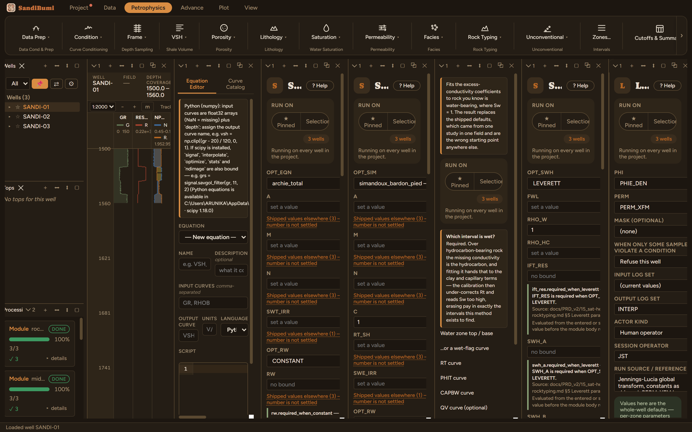
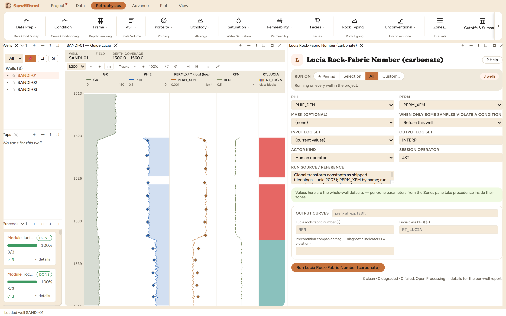

Lucia Rock-Fabric Number (carbonate)
9.2 ·lucia_rfnCarbonate rock typing by Lucia rock-fabric number: the global porosity-permeability transform is inverted analytically for RFN, then binned into the three Lucia classes. The porosity should be INTERPARTICLE porosity; on clastic-dominated fields this applies to carbonate stringers only.
log₁₀k = (A − B·log₁₀RFN) + (C − D·log₁₀RFN)·log₁₀φip, inverted for RFN RFN 0.5-1.5 = Class 1 (grainstone), 1.5-2.5 = Class 2, 2.5-4 = Class 3
References
- Lucia (1995); Jennings & Lucia (2003), SPE 78740
What this is and when to reach for it
Carbonate rock typing by the Lucia rock-fabric number: the petrophysical-class system built on the observation that in nonvuggy carbonates, interparticle porosity and permeability tie to a fabric number running from grainstone to mud-dominated packstone. Reach for it on carbonate sections and carbonate stringers in clastic fields, and read this chapter's demonstration before quoting it anywhere else.
The physics
log10 k = (A − B·log10 RFN) + (C − D·log10 RFN) · log10 φip RFN 0.5–1.5 → Class 1 (grainstone) RFN 1.5–2.5 → Class 2 (grain-dominated packstone) RFN 2.5–4.0 → Class 3 (mud-dominated)
The module inverts the Jennings and Lucia 2003 global transform analytically for RFN, then bins. PHI should be interparticle porosity: subtract separate-vug porosity where a vug estimate exists, because vuggy pore space contributes porosity without the matrix permeability the transform models. RFN outside the 0.5 to 4 band writes MISSING for the class rather than clamping into the nearest fabric. The constants are transcribed from the paper and the pane says to verify them first.
The picks and why
- PHI PHIE_DEN, PERM PERM_XFM: the same calibrated pair the whole rock-typing shelf uses.
- Run on a clastic section, deliberately: this dataset is sand and shale, and the point of the run is to measure what the transform does when its fabric model does not apply.

Step by step
- On a real carbonate: estimate separate-vug porosity first and feed interparticle porosity.
- Open Petrophysics ▸ Rock Typing ▸ Lucia Rock-Fabric Number, name the inputs, and press Run.
Reading the result
3 clean, and that is the lesson. On 573 samples of sandstone the transform computes everywhere: RFN runs 2.04 / 2.43 / 2.60 at P10/P50/P90, every sample lands inside the 0.5 to 4 band, and the census reads Class 1: 2 samples, Class 2: 287, Class 3: 284. The module has confidently classified a sand-shale section as grain-dominated to mud-dominated carbonate packstone.
SELECT value::INT cls, COUNT(*) FROM computed_curves WHERE curve_name = 'RT_LUCIA' AND NOT isnan(value) GROUP BY 1 ORDER BY 1
Nothing failed, because nothing could: the transform is arithmetic on (φ, k), and clastic clouds occupy the same numeric space. The fabric classes are meaningful only where the fabric model holds, and the only guard is the interpreter knowing the lithology. That is why the class curve is named RT_LUCIA rather than RT: it can never silently stand in for the section's working rock-type curve.

QC and pitfalls
- Gate the run by lithology, not by whether it computes. On mixed sections, run it only over the carbonate stringers (zone the run, or mask on a lithology flag).
- Feeding total porosity in a vuggy interval reads too much φ for the matrix k and pushes RFN toward mud-dominated; subtract the vug estimate first.
- The transform is global. Where a field has its own core-calibrated fabric boundaries, those belong in a cutoff ladder, and this module's RFN stays as the indicator.
What the application enforces
Everything below is generated from the same manifest the application builds this module’s pane from — descriptions, defaults, sources, ranges and pre-run checks here are exactly what the running application enforces.
Carbonate rock typing by Lucia rock-fabric number (Jennings & Lucia 2003). Inverts the global transform log10 k = (A − B·log10 RFN) + (C − D·log10 RFN)·log10 φip analytically for RFN, then bins: RFN 0.5–1.5 = Class 1 (grainstone), 1.5–2.5 = Class 2, 2.5–4 = Class 3 (mud-dominated). PHI should be INTERPARTICLE porosity (subtract vuggy/separate-vug porosity if available); k in mD. Writes RFN and RT_LUCIA (1–3; MISSING outside the 0.5–4 band). Clastic-dominated fields use this only for carbonate stringers. Constants transcribed from the paper — verify first.
Input curves
| Role | Description | Resolves to | Required | Notes |
|---|---|---|---|---|
| PHI | Interparticle porosity | PHIE | yes | — |
| PERM | Permeability | PERM | yes | — |
Output curves
| Name | Description |
|---|---|
| RFN | Lucia rock-fabric number |
| RT_LUCIA | Lucia class (1–3) |